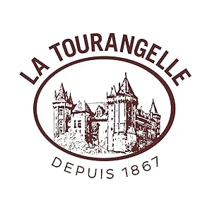
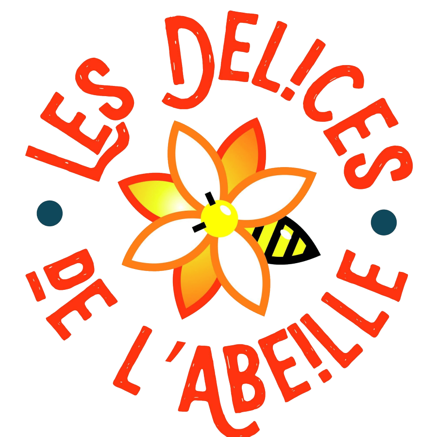
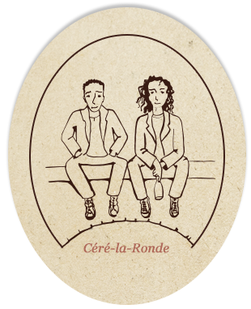
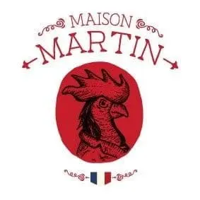
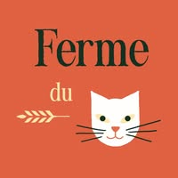
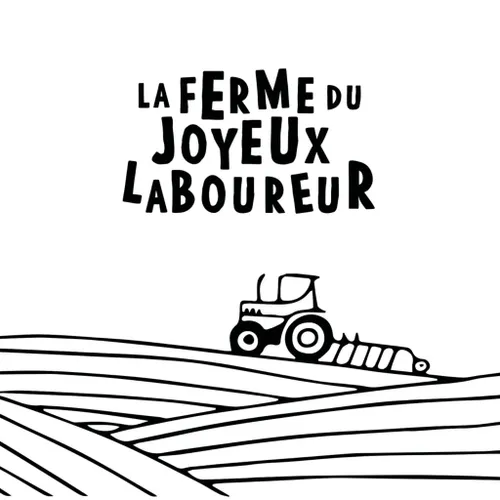
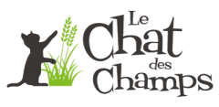

NOS PARTENAIRES
Spécialiste tourangeau des poivres d'exception et des épices de qualité supérieure. Nous sommes fiers d'avoir sélectionné cette marque pour nos épices en vrac.
Visiter le siteConserverie Bretonne depuis 1920, ils perpétuent la tradition des conserves de qualité. Sardines, maquereaux, thons et tartinables au goût authentique.
Visiter le site
Huilerie emblématique née en Touraine, La Tourangelle propose des huiles artisanales de grande qualité aux saveurs authentiques et raffinées.
Visiter le siteMaison familiale reconnue pour son savoir-faire artisanal autour du saumon fumé, du foie gras et des produits gastronomiques d'exception.
Visiter le site
Biscuiterie artisanale du Périgord Noir depuis 1996. Croquants aux noix, sablés, confiseries — tous fabriqués avec des fruits et ingrédients locaux du Périgord.
Visiter le site
Apiculteurs à Azay-sur-Cher, ils récoltent et vendent leur miel de Touraine en circuit court. Des miels d'acacia, de forêt, de fleurs — tout droit de la ruche.
Visiter le site
Artisan confiturier primé de Semblançay — 5ème meilleur confiturier du monde en 2019. Des confitures audacieuses, riches en fruits, sans conservateurs.
Visiter le site
Artisan charcutier du Pays Basque depuis 1946. Jambon Ibaïama affiné 20 mois, foie gras, salaisons — des produits élaborés sans additif ni conservateur.
Visiter le site
Brasserie artisanale tourangelle produisant des bières biologiques de caractère avec un savoir-faire local et authentique.
Visiter le site
Producteurs engagés dans une agriculture biologique et locale, mettant en avant des produits frais et respectueux de l'environnement.
Site en cours
Une sélection de produits laitiers mettant en avant la qualité du terroir et le savoir-faire des producteurs locaux de Touraine.
Site en cours
Des jus, compotes et spécialités fruitières élaborés avec des fruits rigoureusement sélectionnés pour préserver toutes leurs saveurs.
Visiter le site
Brasserie locale passionnée proposant des bières artisanales originales brassées avec exigence et créativité en Touraine.
Site en coursProducteur local mettant à l'honneur le maïs et ses déclinaisons gourmandes à travers des produits artisanaux et savoureux.
Visiter le siteMaison spécialisée dans les cidres artisanaux élaborés avec des pommes soigneusement sélectionnées pour des saveurs authentiques.
Visiter le site
Entreprise locale valorisant le terroir tourangeau avec des produits artisanaux de qualité et un savoir-faire familial.
Site en cours
Fromagerie artisanale proposant des fromages de terroir élaborés avec passion et respect des traditions locales tourangelles.
Site innactif
Exploitation agricole biologique engagée dans une production locale respectueuse de l'environnement et des saisons de Touraine.
Site innactif
Producteurs passionnés proposant des produits fermiers biologiques issus d'une agriculture locale et responsable.
Visiter le site
Une sélection de spécialités régionales mettant en avant les saveurs authentiques et gourmandes du terroir ligérien.
Visiter le site
Ferme biologique locale proposant des produits cultivés avec soin dans le respect de la nature et du terroir de Touraine.
Visiter le site